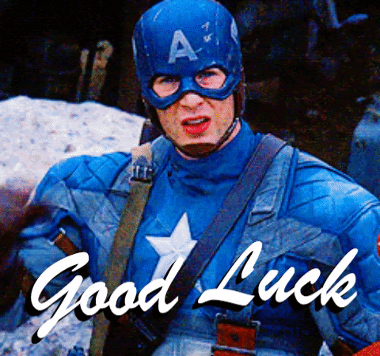

📋 סיכום הנלמד
קולנוע הוא מדיום סיפורי ויזואלי ולא תיעוד של דיאלוגים (אנשים מדברים).
פריים (תמונה קולנועית) מתוכנן ומוקפד צריך לספר סיפור, אך היא גם חייבת לעורר תגובה רגשית אצל הצופה.
יותר מדויק לנסות לייצר את הרגש מאשר לצלם דמות מקרוב שחשה את הרגש.
רגשות הם דבר מופשט, נזדקק לתחקיר (לפחות בהתחלה) כדי ללמוד כיצד הצליחו במאים רבים ליצור רגשות מגוונים.

🎭 תרגיל מסכם
לפניכם רשימה של רגשות שליליים ורגשות חיוביים:
😊 רגשות חיוביים
הערצה אהבה הצלחה שמחה שלווה😔 רגשות שליליים
קנאה בדידות אכזבה לחץ פחד✏️ מה עושים?
בחרו שני רגשות חיוביים ושני רגשות שליליים וחפשו פריים מסרט או סדרה שאתם צופים בה, אשר מצליחים לבטא רגש זה (ולא באמצעות צילום תקריב בלבד)
הציגו לפני כל הכיתה את הפריים, אך בכדי לדעת אם הצלחתם לבחור תמונה מדויקת, אל תחשפו לפני שאר הכיתה את הרגש, תנו להם לזהות לבד באמצעות התמונה.
מה לדעתכם בתמונה מצליח לעורר רגש זה?
🎬 אז מה אנחנו עושים כאן?
מספרי סיפורים רגשיים אודיו ויזואלים
ומרגע זה כל דבר שנלמד הוא כלי נוסף בשבילכם בכדי לשרת מטרה זו